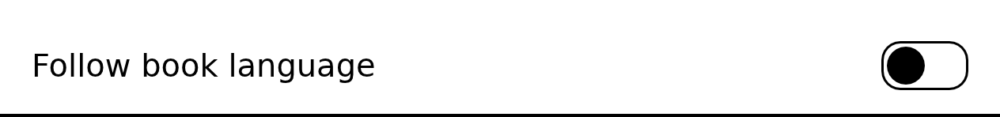
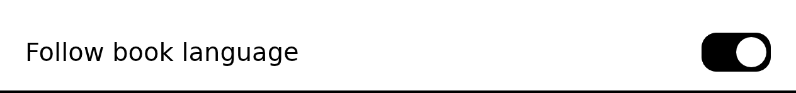

ShamsaInk design system
Generated from reader/design/spec and the renders kept in reader/design/golden. The renders are what the reader draws, at a third of their size. Change the spec, then the template; make design says what is out of step.
Principles and rules
No clock, no bar, no ticking while reading: the reader sleeps until a touch or a button.
Kept by: by eye (the reading screen has no controls: checked)The dock at the bottom; the glance beside the finger; in landscape, at the grip.
Kept by: by eyeLight where there is a light, Listen where there is sound, colour on colour screens. Nothing greyed out.
Kept by: by eye (to come: a control's `requires` against the device profile)The page buttons reach every control, for devices and people that need them.
Kept by: every screen has a page-button map when the device has page buttonsThe library's header and the book's bar are one component in one place: the way back or search at the start, the device's time, light and battery at the end.
Kept by: both screens are made from topbar.html (template check)Each layer its own box and waveform; black and white controls, no shadows, greys or motion.
Kept by: every component names a waveform the device has and a regionA tap on the page, Done, a close button or a jump: each closes everything at once and leaves the page alone, one refresh.
Kept by: a screen's dismiss is a tap off it or a control going to the page or back to where it came fromThe page, the bar and dock, one panel. No panel opens another; one may take another's place.
Kept by: no goto from a panel or overlay to a panel or overlay; replace stays in one layerThe bar holds what belongs to the device (time, headphones, light, battery); the dock what belongs to the book (where you are, its tools).
Kept by: by eyeChapter arrows, a tap on the bar or Contents leave "Back to page N" in the place line until two pages are read.
Kept by: by eye (dock's back control exists)Tokens
| Variable | Value |
|---|---|
--gap | 0.5em |
--ink | black |
--line | 3px |
--pad | 0.05em 0.6em |
--paper | white |
--radius | 0.4em |
| panel font | 40 px (1em); margin 40 px |
Layers, bottom up: page → screen → topbar → dock → panel → overlay
Devices
| Profile | Screen | Waveforms | Smallest tap | Page buttons | Fonts |
|---|---|---|---|---|---|
kobo-libra-colour | 1264 × 1680 at 300 ppi | A2, DU, GL16, REAGL, GC16 | 7 mm (+ 16 px slack) | yes | farsi: Parastoo; icons: Phosphor; icons_filled: Phosphor-Fill; text: DejaVu Sans; |
Components
| Component | Purpose | States | Size | Refresh | Right to left |
|---|---|---|---|---|---|
bar | A progress bar with ticks; a tap on it goes anywhere. | share | DU, own-box | fills from the book's start side | |
buttonhelper btn | Words, and an icon before them, in a border. Does one thing when tapped. | off | DU, own-box | mirrors on its own (logical properties) | |
icon-buttonhelper ibtn | An icon alone in a box easy to tap, no border. Drawn filled when on. | off, on | 2.2em × 2.2em | DU, own-box | pointing icons are mirrored (.flip) |
list-row | One row of a long list (Contents' entries); the current one bold on grey. A list is laid out and paginated by the engine. | off, current | GL16, page | the list runs in the book's direction; each row's indent is on its start side | |
menu-item | One entry of a narrow menu: an icon and its words, the whole row the button; the last entry set apart by a line. | off | GL16, own-box | the menu hangs from the end side of the bar | |
segmentshelper pick | One choice of a few, as one bar; the chosen one filled. | off, on | DU, own-box | mirrors on its own | |
sliderhelper slide | A quantity set along a track, with a button for less and one for more; a tap on the track sets the value there. | value | 2.6em × 1.7em | DU, own-box | the track fills from the start side |
stepperhelper step | A setting's row: its name, a minus, the value, a plus. | value | DU, own-box | mirrors on its own | |
tabshelper pick | A few parts of one panel, one shown; the shown one bold and underlined, a line under all. | off, on | DU, own-box | mirrors on its own | |
togglehelper pick | A switch: a track with a knob, dark with the knob at its end when on. | off, on | DU, own-box | the knob moves toward the end side |
Flow
Every way into a screen: from → to: gesture control. The app starts at the library; every way out of a panel lands on the page.
- library → reading: tap row
- dock → contents: tap contents
- topbar → library: tap topbar-start
- reading → topbar: tap-page
- reading → dock: tap-page
- dock → text: tap text
- menu → library-language: tap language
- library → library-sort: tap list-sort
- topbar → light: tap topbar-light
- topbar → menu: tap topbar-menu
- library → menu: tap topbar-menu
- topbar → battery: tap topbar-battery
- library → battery: tap topbar-battery
- reading → highlight-menu: hold-word
- library-book-menu → library-book-details: tap book-details
- library → library-book-menu: hold-row
- library-book-menu → library-book-remove: tap book-remove
Screens
Renders for kobo-libra-colour, 1264 × 1680, shown at a third.
reading
pagebuiltthe pagebuttons: {Next page Previous page Open the dock The glance, while held}
The book and nothing else. Every control is a layer over it, never written into it.
contents
screenbuiltbuttons: {Ring down the list (past the end, the next page of it) Ring up the list Go there Back to the page}leave: contents-close
The book's table of contents as a list, the current entry marked; a tap on an entry goes there.
| Control | Component | Does | When |
|---|---|---|---|
contents-close | icon-button | goto → reading | |
e | list-row | goto → reading |


library
screenbuiltapp starts herebuttons: {Ring down the list (past the end, the next page of it) Ring up the list Go there Back to the page}
The books, a row each, under the bar and the filters (Reading, New, Finished, All) with a sort button; always left to right, each row in its title's direction.
| Control | Component | Does | When |
|---|---|---|---|
topbar-start | icon-button | search (no action until there is a keyboard) | |
topbar-phones | icon-button | Bluetooth sound | |
topbar-light | icon-button | goto → light | |
topbar-battery | button | goto → battery | |
topbar-menu | icon-button | goto → menu | |
filter- | segments | shows the books of a filter (reading, new, finished, all) | |
list-sort | icon-button | goto → library-sort | |
list-prev | icon-button | the previous page of rows | |
list-next | icon-button | the next page of rows | |
row | list-row | goto → reading |

topbar
topbarbuiltbuttons: {Ring to the next control Ring to the previous control Choose it (on a slider or stepper, one step up) Back out a level (on a slider, one step down)}leave: tap-outside
Over the page's top, the same in the library and a book.
| Control | Component | Does | When |
|---|---|---|---|
topbar-light | icon-button | goto → light | |
topbar-start | icon-button | goto → library | |
topbar-phones | icon-button | Bluetooth sound | |
topbar-menu | icon-button | goto → menu | |
topbar-battery | button | goto → battery |


dock
dockbuiltbuttons: {Ring to the next control Ring to the previous control Choose it (on a slider or stepper, one step up) Back out a level (on a slider, one step down)}leave: tap-outside
Where the reader is, a bar to go anywhere in the book, the way back after a jump, and the tools.
| Control | Component | Does | When |
|---|---|---|---|
chapter-prev | icon-button | the previous chapter | |
progress | bar | go to the share tapped | |
chapter-next | icon-button | the next chapter | |
back | button | back to where the jump started | after a jump |
contents | icon-button | goto → contents | |
text | icon-button | goto → text | |
read-aloud | icon-button | start the narration | the book is narrated |


text
dockbuiltbuttons: {Ring to the next control Ring to the previous control Choose it (on a slider or stepper, one step up) Back out a level (on a slider, one step down)}leave: tap-outside
The text's size, line spacing and margins, and the page turns' direction, with the page showing between the bar and the sheet.
| Control | Component | Does | When |
|---|---|---|---|
tab-text | tabs | shows the Text tab | |
tab-page | tabs | shows the Page tab | |
size | stepper | text size, smaller or larger | Text tab |
lines | stepper | line spacing | Text tab |
margin | stepper | margins | Text tab |
dir- | segments | page turns follow the book's direction | Page tab |
dir-rtl | segments | page turns right to left | Page tab |
dir-ltr | segments | page turns left to right | Page tab |
reset | button | the book's text settings back to the defaults |


library-language
panelbuiltbuttons: {Ring to the next control Ring to the previous control Choose it (on a slider or stepper, one step up) Back out a level (on a slider, one step down)}leave: tap-outside
One row, no title: Follow book language and its switch. A tap applies it at once.
| Control | Component | Does | When |
|---|---|---|---|
lang-follow | toggle | interface language follows the book's, or English only |


library-sort
panelbuiltbuttons: {Ring to the next control Ring to the previous control Choose it (on a slider or stepper, one step up) Back out a level (on a slider, one step down)}leave: tap-outside
How the books are sorted, under the filters (recent, title, author, added).
| Control | Component | Does | When |
|---|---|---|---|
sort- | segments | sorts the books by the name chosen |

light
panelbuiltbuttons: {Ring to the next control Ring to the previous control Choose it (on a slider or stepper, one step up) Back out a level (on a slider, one step down)}leave: tap-outside
The light's level and warmth, and a full refresh to clean the screen.
| Control | Component | Does | When |
|---|---|---|---|
light | slider | set the level | |
warmth | slider | set the warmth | |
clean | button | a full refresh |


menu
panelbuiltbuttons: {Ring to the next control Ring to the previous control Choose it (on a slider or stepper, one step up) Back out a level (on a slider, one step down)}leave: tap-outside
A narrow list hanging from the bar's menu button. In a book only Leave; in the library Settings above it.
| Control | Component | Does | When |
|---|---|---|---|
language | menu-item | replace → library-language | in the library |
leave | menu-item | leaves to Kobo's interface |


battery
overlaybuiltbuttons: {Ring to the next control Ring to the previous control Choose it (on a slider or stepper, one step up) Back out a level (on a slider, one step down)}leave: tap-outside
The battery's level in a small box hanging from the bar under its battery; any tap closes it.


highlight-menu
overlaybuiltbuttons: {Selection one word longer One word shorter Highlight Cancel}leave: tap-outside
By the words chosen (a finger held on a word, dragged and lifted) or a highlight held: Highlight or Remove highlight, and Listen from here in a narrated book. Hangs under the words, over them when there is no room.
| Control | Component | Does | When |
|---|---|---|---|
hl-make | menu-item | highlights the words chosen | words are chosen |
hl-remove | menu-item | removes the highlight held | a highlight is held |
hl-listen | menu-item | starts the narration from the word | the book is narrated |


library-book-details
overlaybuiltbuttons: {Ring to the next control Ring to the previous control Choose it (on a slider or stepper, one step up) Back out a level (on a slider, one step down)}leave: tap-outside
A book's facts, read only, in the menu's place; any tap closes it.

library-book-menu
overlaybuiltbuttons: {Ring to the next control Ring to the previous control Choose it (on a slider or stepper, one step up) Back out a level (on a slider, one step down)}leave: tap-outside
A book's menu, opened by a finger held on its row: mark finished, start again, details, remove.
| Control | Component | Does | When |
|---|---|---|---|
book-finish | menu-item | marks the book finished | the book is not finished |
book-unfinish | menu-item | marks the book not finished | the book is finished |
book-again | menu-item | forgets the place, keeps the highlights | the book was opened |
book-details | menu-item | replace → library-book-details | |
book-remove | menu-item | replace → library-book-remove |


library-book-remove
overlaybuiltbuttons: {Ring to the next control Ring to the previous control Choose it (on a slider or stepper, one step up) Back out a level (on a slider, one step down)}leave: tap-outside
Asks before a book is removed: what is removed, then Remove and Keep. Removing deletes the file and all the reader keeps for it.
| Control | Component | Does | When |
|---|---|---|---|
book-remove-yes | button | deletes the book's file and what the reader keeps for it | |
book-remove-no | button | keeps the book |

Page buttons
| Map | Forward | Back | Hold forward | Hold back |
|---|---|---|---|---|
list | Ring down the list (past the end, the next page of it) | Ring up the list | Go there | Back to the page |
listening | Next page (the voice follows) | Previous page | Pause or play | A sentence back |
reading | Next page | Previous page | Open the dock | The glance, while held |
ring | Ring to the next control | Ring to the previous control | Choose it (on a slider or stepper, one step up) | Back out a level (on a slider, one step down) |
word-held | Selection one word longer | One word shorter | Highlight | Cancel |